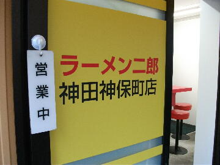
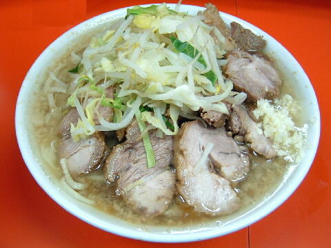

千代田区神田神保町1-21-4
日・祝
11：00〜17：00

ラーメン 700円、小豚 800円、豚ダブル 900円
大 800円、大豚 900円、大豚ダブル 1000円
生卵 50円
店員は、交友関係が広い店主と助手。
コショウ、中粒の一味唐辛子。
レンゲ無。エコ箸。ティッシュ有。名刺無。
BGMは、ラジオ。
トッピングは、本店と同じ。
メルマガは「a0001676039@mobile.mag2.com」で用意されている。
ラーメン二郎 神田神保町店 神田神保町店の店主公認Twitter
「ラーメン二郎 神保町」でヤフー検索
「ラーメン二郎 神保町」でヤフーリアルタイム検索
「ラーメン二郎 神保町」でグーグル検索

小豚 ニンニク
麺は、平太ストレート麺でスープが良くしみこんで旨い。二郎にしては細め。量は小でもかなり多目。
ぶたは、この日は大きくて厚切りで柔らかくて脂身も旨かった。
スープは、醤油が程好く立っていて、豚の出汁もタップリで旨い。
二郎の旨味がタップリ詰まった厚い油の層に、小麦の風味豊な麺をからめると美味い。
ヤサイは、モヤシ8：キャベツ2の割合。程好い茹で上がり。
ニンニクは、中粒に刻んだ上質なニンニク。
ＰＣ店